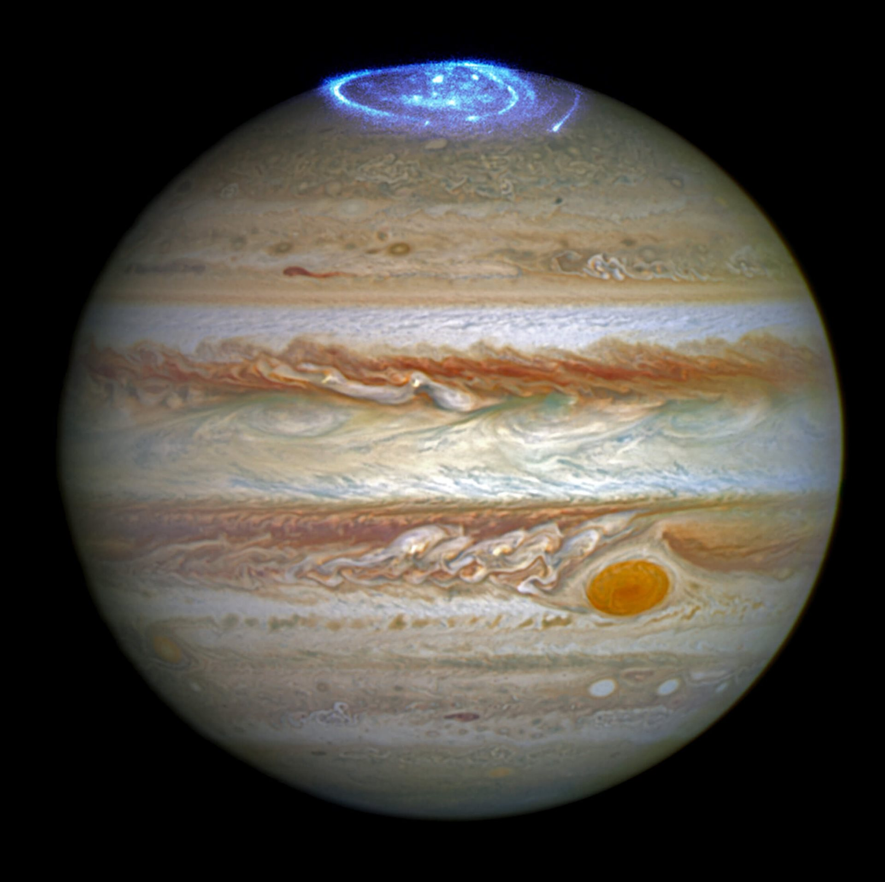

Юпитер е петата по отдалеченост от Слънцето планета и най-голямата (с голяма преднина) в Слънчевата система. Юпитер и другите газови гиганти в Слънчевата система са известни още като юпитероподобни планети, планети-гиганти.
Основната част от общата му маса е водород; една четвърт от масата му се състои от хелий. Наличието на скалисто ядро, съставено от тежки елементи не е потвърдено, но е възможно такова да съществува.
Голямото червено петно- огромен ураган, чието съществуване е регистрирано още при първите наблюдения на планетата през 17 век. Планетата има почти незабележим пръстен от прахови частици, както и изключително мощна магнитосфера.
Регистрирани са 79 луни, от които най-голямата – Ганимед, е с по-голям диаметър от Меркурий. Ганимед е един от четирите т.нар. Галилееви спътници, открити от астронома Галилео Галилей през 1610 година.

Ето някои данни за Юпитер.
| Отдалеченост от Слънцето | 778 340 821 км. |
| Екваториален диаметър | 139 000 км. |
| Плътност спряма водата | 1,3 пъти |
| Продължителност на деня | 9,9 земни часа |
| Продължителност на годината | 11,9 земни години |
| Средна температура на повърхността | -148°C |
| Известни луни | 79 |